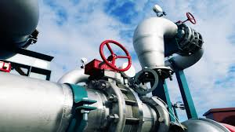

BABATOLA FADAHUNSI
12, Rasheed Lamidi Street,
Owode-Onirin
babatolafadahunsi@gmail.com
+234-810-5764-636, +234-811-5984-324
PERSONAL STATEMENT
A Result-driven Piping/Mechanical Design Engineer with extensive experience working with new and existing piping systems of Onshore, Offshore oil and gas projects. Skilled in incorporating 3D laser scanning technology to support engineering and construction projects to reduce project cost and utilize resources.
SKILLS /ABILITIES
- Microsoft Office Suite: Word, Excel, Power-Point
- SQL administrator and Python for Data Analysis (Intermediate Level)
- 3-D Piping Modelling, Catalogue and Specification Administrator, Pipe-Fit Assurance and Pipe Fabrication Assurance using AUTOCAD PLANT 3D and AVEVA PDMS/E3D
- 3D Laser Survey Data Acquisition & Processing using LEICA CYCLONE
- Clash detection using NAVISWORKS FREEDOM AND MANAGE
- Pipe stress analysis using BENTLEY AUTOPIPE & CAESAR II (Beginner Level)
- Excellent team management, communication and inter-personal relationship abilities
- Innovative numerical problem-solving, can generate workable solutions and resolve complaints.
EDUCATION INSTITUTIONS AND QUALIFICATIONS ATTAINED WITH DATES
UNIVERSITY OF LAGOS, AKOKA (2017-2019)
M.Sc. Mechanical Engineering (Thermofluids Engineering option)
Thesis: Thermal Analysis of Convective-Radiative Porous Fin in Magnetic and Vibration Environment using Differential Transformation Method (DTM)
FEDERAL UNIVERSITY OF TECHNOLOGY, AKURE (2008-2013)
Bachelor of Engineering in Mechanical Engineering
Thesis: Design and Fabrication of a domestic water treatment plant
WORK EXPERIENCE
ALPHABRAVO INTEGRATED SERVICES (April 2023 – Date)
8, Office Apartment, Rasheed Alaba Williams St, Admiralty way, Lekki
www.alphabravoservices.com
- Manage and coordinate all the piping discipline tasks internally in a part-project
- Provision of 3D Laser Scanning, 3-D Piping Models, Isometric Drawings and Bulk MTO Generation.
- Setting up projects, preparing piping specs and catalogue in AutoCAD Plant 3D and AVEVA PDMS/E3D.
LES ENERGY LIMITED (Oct 2022 – Mar 2023)
Plot 32 Furo Ezimora St, Lekki
www.lesenergy.net
Position: Piping Designer & Modeller
Job Description:
- Manage and coordinate all the piping discipline tasks internally in a part-project
- Provision of 3D Laser Scanning, 3-D Piping Models, Isometric Drawings and Bulk MTO Generation.
- Setting up projects, preparing piping specs and catalogue in AutoCAD Plant 3D and AVEVA PDMS/E3D.
- Collaborate with the designing team to properly implement ideas to complete significant projects and provide all engineering support.
- Design reviews with other disciplines such as piping, mechanical, process, structural and instrumentation to ensure sync of project frontiers.
- Building and updating of piping and structural catalogue in AVEVA PDMS/E3D for design purposes.
- Resolving 3D modelling issues from all disciplines.
- Produce clear and organized output with conformance to standards.
- Assist in safety compliance on field trips.
- Aid all senior engineers and suggest improvements to required design; travel to plant sites to analyse all equipment.
- Evaluate and analyse all client requirements and prepare necessary designs as per piping specifications for clients and recommend appropriate alternatives and a backup plan
- Interpret all design codes and ensure effective performance of all piping activities.
- Following safety procedures and meeting standard requirements.
- To be conscious of the environment and respond to HSE related issues.
- To comply with all established Organizational QHSE related policies, procedures, goals and objectives.
- Adopt the organization’s performance management scheme by setting objectives, participating in performance reviews and building a personal development plan.
- Ensure that the environment is protected by limiting the amount of paper usage for laser scanning.
- Ensure that Hazards/Environmental Aspect Impacts related to the Laser Scanning are identified and communicated to the HSE department.
- Comply with established policies and procedures related to work-station ergonomics from prolonged hours of sitting.
- Establish and implement QHSE related Objectives that meet the SMART criteria.
- Other Ad-hoc duties that may be assigned from time to time.
- Participation in risk assessment and establishment of process plans.
PETROPRISM LIMITED June 2022 – Sept 2022
123 T.F Kuboye Street, Lekki Phase 1, Lagos
www.petroprismlimited.com
Position: CAD Engineer, 3D Modelling & Dimensional Control Services
Job Description:
- Piping modelling & Catalogue and Specification Administrator
- Creation and management of Projects in AVEVA PDMS/E3D
- Develop competence in laser scanning operations, data management processes and software applications.
- Perform and/or supervise laser scanning projects, and data processing as needed
- Field visitation to onshore and offshore locations for data acquisition.
- Mentor and groom younger employees with a view to ensuring effective knowledge transfer and drive the delivery of high Service Quality (SQ) and safety standards on all projects.
- Work with the Operations Manager on Resource Planning for projects.
- Development of Technical proposals as required.
- Provide updates to operations manager in assigned projects as required.
GMUNU LIMITED Feb 2019 – June 2022
Plot 120/12, Bosun Adekoya Street, Lekki Phase 1
www.gmunugroup.com
Position: Piping Design Engineer
Job Description:
- Carry out 3D laser scanning offshore and onshore
- Data Processing of Scanned data using Leica Cyclone
- Piping and Mechanical Engineering design
- 3D CAD modelling and drafting with AutoCAD, AutoCAD Plant 3D and Aveva E3D
- Catalogue and Specification Administration in AutoCAD Plant 3D
- Clash detection and Quality Assurance using Navisworks Freedom/Manage
- Fabrication Assurance of Fabricated pipe spools to ensure conformity with design
- Pipe-fit assurance to ensure that pipe spools fit to existing tie-points (Flanged & Field weld) while avoiding
clashes with existing piping, structural and equipment member in the facility during installation
- Developing and integrating with other teams
- Documentations
INDEPENDENT SCHOOLS ADVISORY SERVICES Sept 2015-Feb 2018
34, Raymond Njoku Street S/W Ikoyi, Lagos, Nigeria
www.isasltd.com
Position: Academic Service Administrator (Tutor)
Job Description:
- Tutoring A-Level Mathematics and Physics, Cambridge IGCSE/GCSE Mathematics and Science, Cambridge Checkpoints for Mathematics and Science
NATIONAL YOUTH SERVICE CORPS (NYSC) Aug 2014-Aug 2015
Nysc, Ebonyi
Position: Science and Introductory Technology Teacher
GENAIS AUTO COMPANY April 2012-Sep 2012
54, Opebi Road, Salvation bus stop, Opebi, Ikeja, Lagos
www.genaisautogarage.com.ng
Position: Undergraduate Intern
Job Description:
- Assist in the repair of car engines; Light mechanical work, shop/vehicle cleanup
- Physical inventory of parts/Vehicle check
SOME PROJECTS CARRIED OUT WITH ROLES
ERHA FABRICATION ASSURANCE PROJECT

ERHA SEWAGE TREATMENT PLANT (STP) DESIGN

ERHA TURBINE GENERATOR LIQUID FUEL VALVE & PIPING REPLACEMENT (Aug 2022 – Sept 2022)

USAN FABRICATION ASSURANCE PROJECT
ESCRAVOS EXPORT SYSTEM PROJECT (Aug 2022 – Sept 2022)

MYSTRAS FPSO PIPING REPLACEMENT PROJECT (Jan 2022 – June 2022)

LANGLEY TURNAROUND MAINTENANCE PROJECT Mar 2022 – June 2022
ERHA FPSO PIPING REPLACEMENT PROJECT Nov 2019-Feb 2020
JV FIREWATER UPGRADE REPLACEMENT PROJECT Mar 2019-May 2019

TRAININGS
- BENTLEY AUTOPIPE & CAESAR II 2021
- ASME B31.3 (Process piping), ASME B31.4 and ASME B31.8 2021
- 3D Laser Scanning and Data Processing 2021
- Fabrication Assurance 2019
- Pipe-fit Assurance 2019
LEADERSHIP POSITION
- Corpers Liaison Officer (Comprehensive Secondary School, Unwana)
- General Secretary, Environmental Community Development Service, Ubeyi Zone
INTEREST AND ACTIVITIES
- Research to broaden my knowledge.
- Reading & Writing.
- Engineering Design
- Impacting knowledge
- Internet Correspondence
REFEREES
- Adeniyi Ogundipe
Principal Consultant
EXP ENGINEERING LIMITED
0803 522 9017
- Samuel Oladele
Technical Lead/Engineering Line Manager
GMUNU LIMITED
0803 610 2570